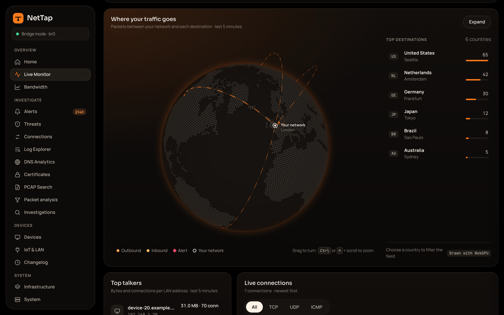
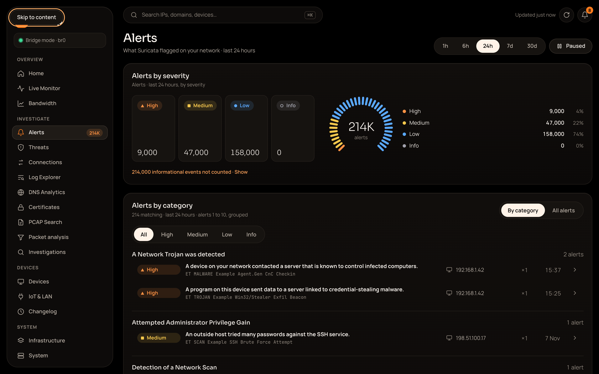
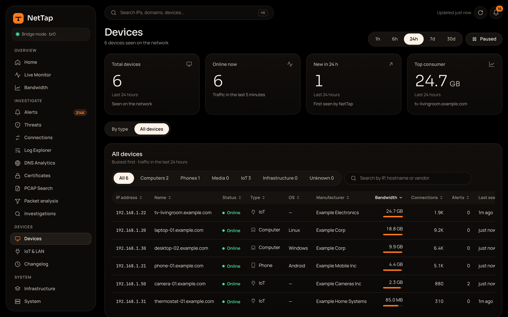

NetTap¶
Open-source network visibility for your home or small business.
NetTap is a hardware-agnostic network appliance for your home or office network. It captures and analyzes your network traffic, giving you enterprise-grade telemetry through a polished web dashboard --- without requiring deep networking knowledge.



The tour and screenshots use demo data, not a real network.
What NetTap Does¶
NetTap gets a copy of your network traffic in one of three ways:
- Mirror / SPAN (recommended): a managed switch copies traffic to NetTap. NetTap stays outside the traffic path, so it can't break your network. This is the tested mode.
- DHCP gateway (being tested): NetTap hands out addresses and passes traffic on to your router. It hasn't been verified on real hardware yet.
- Inline bridge (advanced): NetTap sits between your modem and router as a transparent Layer 2 bridge. It hasn't been verified on real hardware with the current build.
The setup guide helps you choose. Either way, NetTap inspects the traffic with industry-standard tools:
- Zeek generates structured metadata logs for every connection (DNS, HTTP, TLS, DHCP, SMTP, and more)
- Suricata performs signature-based intrusion detection using the Emerging Threats ruleset
- netsniff-ng records all traffic to rotating PCAP files for forensic packet analysis
- OpenSearch indexes everything for fast search and visualization
The result: you see exactly what every device on your network is doing, which external servers they talk to, and whether any of that traffic is suspicious.
Key Features¶
- Device-Centric Dashboard --- see what each device is doing at a glance, with bandwidth, connections, and risk scores
- Plain English Alerts --- Suricata IDS detections with human-readable explanations, not raw signatures
- Passive Capture --- in mirror mode NetTap only receives a copy of the traffic, so it adds no latency and can't break your network
- Three-Tier Storage --- intelligent retention policies keep 90 days of metadata, 180 days of alerts, and 30 days of packet captures
- SSD Health Monitoring --- SMART monitoring with automatic write coalescing to protect drive endurance
- Built-in Update System --- check for and apply updates from the dashboard
- No Cloud Dependency --- everything runs locally. No subscriptions, no telemetry, no data leaves your network
- Setup Wizard --- guided first-run experience walks you through the capture mode, port choice, storage and your admin account
Quick Links¶
| I want to... | Go to... |
|---|---|
| Set up NetTap from start to finish | Setup guide |
| Check if my hardware is compatible | Hardware Guide |
| Understand the installation process | Installation |
| Learn the dashboard | Dashboard Overview |
| Investigate an alert | Alerts |
| Tune performance | Performance Tuning |
| Forward logs to my SIEM | SIEM Forwarding |
| Contribute to the project | Contributing |
| See all configuration options | Environment Reference |
Architecture at a Glance¶
Managed switch ── mirror port ──▶ [ capture port ]
(copy of the router port) │
▼
Zeek + Suricata + netsniff-ng
│
▼
OpenSearch
│
▼
NetTap Dashboard (web UI)
accessed via management NIC / Wi-Fi
This is mirror mode. In bridge mode the capture port is a bridge br0 between the modem and the router, and in DHCP gateway mode it is the one port plugged into your router. In mirror and bridge modes NetTap is invisible on the data path: your modem and router communicate exactly as before, and NetTap just listens.
Technology Stack¶
| Component | Role | Version |
|---|---|---|
| Ubuntu Server | Host OS | 22.04 / 24.04 LTS |
| Docker + Compose | Container orchestration | v2+ |
| Malcolm (CISA) | Network analysis platform | 26.02.0 |
| Zeek | Network metadata analysis | 6.x |
| Suricata | Intrusion detection (IDS) | 7.x |
| netsniff-ng | Full packet capture (pcap-capture) |
Malcolm 26.02.0 |
| OpenSearch | Search and analytics engine | 2.x |
| Grafana | Optional dashboards, off by default (--profile grafana) |
10.4.x |
| SvelteKit | Web dashboard framework | 2.x |
| Python (aiohttp) | Storage/health daemon | 3.10+ |
Project Status¶
NetTap is in active development. The current version is the pre-release v0.4.0-alpha.1, for early testers using mirror / SPAN mode. It covers:
- Core infrastructure (bridge, Malcolm deployment, hardware validation)
- Storage management (ILM policies, retention daemon, SMART monitoring)
- Onboarding UX (setup wizard, NIC auto-detection)
- Dashboard (live traffic, alerts, devices, investigations, compliance)
- Community release (documentation, CI/CD, security hardening)
Acknowledgements¶
NetTap builds on Malcolm, Zeek, Suricata, OpenSearch and many other upstream projects. See the project credits for the maintainers, tools, rule providers, datasets and fonts behind NetTap, and what each contributes.
License¶
NetTap-original code, documentation and tooling are licensed under the GNU General Public License version 3 only (GPL-3.0-only). Commercial use is permitted. If you distribute modified versions, you must license them under GPLv3 and provide recipients with the corresponding source code as required by the license. Preserve copyright and license notices and identify your changes. Running a hosted service alone does not require source disclosure under GPLv3. Third-party components retain their own licenses; see Third-Party Licenses.